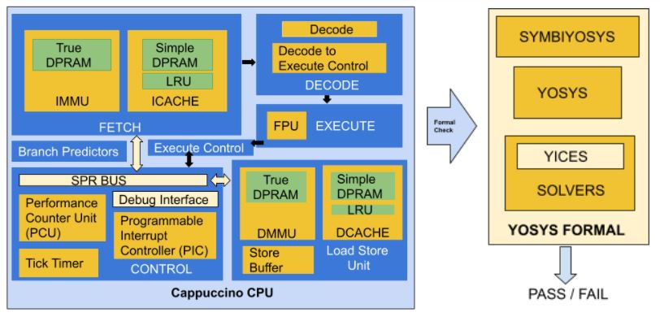

Google Summer of Code (GSoC) 2021 -- Project Outline
August 16, 2021

Abstract
OpenRISC’s mor1kx is one of the old open source projects with more sophisticated and multi-core features. FuseSoC support for mor1kx makes it unique, enabling users to run their assembly programs in a virtual SoC. The or1k-elf toolchain compiles assembly programs, simulated using Icarus Verilog to visualize waveforms. Mor1kx processor went through several tests to verify its functionality, and the or1k-tests successfully identified many unseen bugs in the design.
But we can’t guarantee that the processor is error-free. Formal Verification identifies the hidden bugs in the design. This verification methodology gives confidence that the system remains stable for a long time. Hence in this project, the mor1kx processor is thoroughly tested using Formal Methods, ensuring that implementation meets its specifications.
Project Deliverables
Added assertions to all the submodules of the Mor1kx processor.
Integrate verified functional modules for hierarchical Formal Verification.
CPU level verification of entire mor1kx cappuccino pipeline.
Create a Formal Interface to verify all the properties related to SPR.
Verify mor1kx’s Instruction and Data Wishbone Bus.
Continuous Integration of Formal Tests to GitHub actions workflow.
Pull Requests
Bugs Found
one-hot of SPR acknowledgments fail #137
spr_ack is high when there are no mtspr/mfspr instructions #136
SPR property fails when debug unit is enabled #135
Databus Wishbone Interface Formal Check fails #134
Erroneous ICache hits impact performance counters #123
spr_bus_ack_o reset issue #127 (RESOLVED)
A broken path between dc_hit and dc_hit_o (RESOLVED)
For the same spr address both DMMU and DCACHE spr acknowledgment were observed. (RESOLVED)
DCACHE acknowledged to spr read requests when it’s allowed only for spr write. (RESOLVED)
Project Documentation: Mor1kx Formal
What did I learn?
I got exposure to the Verilog coding styles of experts and understood computer architecture in more depth.
Learned to write assembly programs that run on the mor1kx processor. Explored many GTK Wave features to visualize waveforms.
I played with solvers to resolve Induction/BMC failures which occur most often while testing. Every failure pointed out mistakes I made in an assertion. I fixed the failures after investigating where my assertion went wrong.
My favorite part was handling Induction failure because it made me think more, and it’s somewhat challenging in a few cases.
I learned about Continuous Integration while creating one for Formal Verification.
Acknowledgment
I am grateful to my mentor Stafford Horne who was there to help me whenever I was stuck. It has been a fantastic experience working with him. Special thanks to Dan (ZipCPU); his blog feedback helped me dig Formal Verification to a great extent.
I am looking forward to contributing even more to OpenRISC and the open-source community!